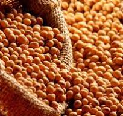

Clima Instável Faz a Safra de Soja Sofrer em Mato Grosso
Ricardo Brandão 14-02-2024 - 2024-02-14 - A safra de soja em Mato Grosso, o maior produtor do grão no Brasil, está sendo impactada negativamente pelas condições climáticas instáveis. A alternância entre períodos de seca e chuvas excessivas prejudicou o desenvolvimento das lavouras, o que pode resultar em perdas significativas na produção. Prejuízos Estimados: Redução na produtividade: Estima-se que a produtividade média da soja em Mato Grosso possa cair em até 15% nesta safra. Perdas financeiras: As perdas financeiras para os produtores podem chegar a bilhões de reais. Impacto na economia: A queda na produção de soja pode afetar negativamente a economia do estado e do país. Fatores que Contribuem para o Problema: Seca: A falta de chuvas no início do ciclo da safra prejudicou a germinação e o desenvolvimento das plantas. Excesso de chuvas: As chuvas intensas em outros momentos do ciclo causaram doenças e problemas de desenvolvimento. Temperaturas elevadas: As altas temperaturas também afetaram negativamente o desenvolvimento das lavouras. Medidas para Minimizar os Danos: Tecnologias agrícolas: O uso de tecnologias agrícolas como irrigação e manejo integrado de pragas e doenças pode ajudar a minimizar os danos causados pelo clima. Diversificação de cultivos: A diversificação das culturas pode ajudar a reduzir os riscos climáticos e aumentar a resiliência dos agricultores. Apoio do governo: O governo pode oferecer apoio aos produtores afetados pelo clima, como linhas de crédito e subsídios para a compra de insumos. O clima instável é um desafio crescente para a agricultura brasileira. É importante que os produtores adotem medidas para minimizar os riscos climáticos e garantir a segurança alimentar do país. Recomendações para os Produtores: Monitorar as condições climáticas: É importante monitorar as condições climáticas para tomar decisões adequadas sobre o manejo das lavouras. Adotar boas práticas agrícolas: A adoção de boas práticas agrícolas, como o uso de cultivares resistentes a doenças e pragas, pode ajudar a reduzir os impactos do clima. Buscar apoio técnico: Os produtores podem buscar apoio técnico de profissionais especializados para auxiliar no manejo das lavouras em condições climáticas adversas. A situação da safra de soja em Mato Grosso é preocupante e exige medidas urgentes para minimizar os danos causados pelo clima.